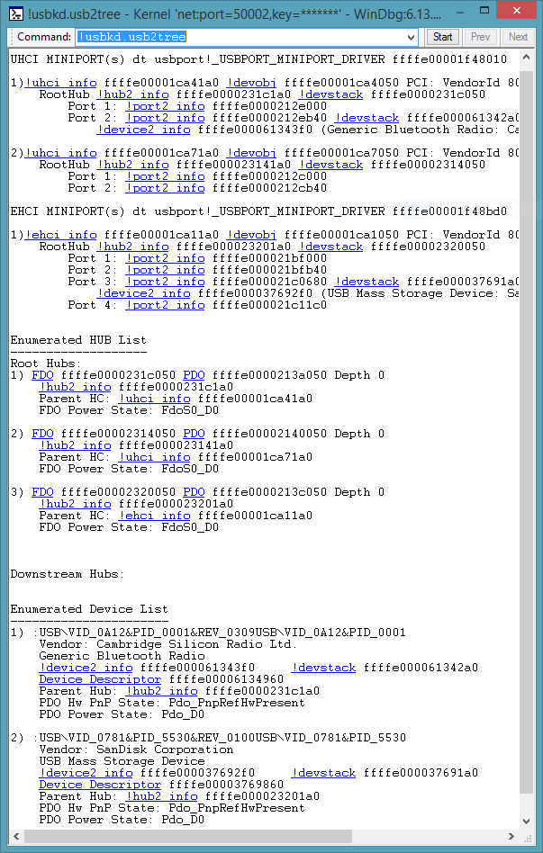

The !usbkd.usb2tree command displays USB 2.0 tree.
!usbkd.usb2tree
Examples
This screen shot shows and example of the output of the !usb2tree command.

The output shows one EHCI execution unit and two UHCI execution units. The execution units shown in this example happen to be on a single USB host controller device. The output also shows the root hubs and connected devices.
The output uses Using Debugger Markup Language (DML) to provide links. The links execute commands that give detailed information related to objects in the tree. For example, you could click one of the !devobj links to get information about the functional device object associated with the EHCI execution unit. As an alternative to clicking the link, you could enter the command manually: !devobj ffffe00001ca7050
DLL
Usb3kd.dll
Remarks
The !usb2tree command is the parent command for many of the USB 2.0 debugger extensions commands. The information displayed by these commands is based on data structures maintained by these drivers:
- usbehci.sys (miniport driver for USB 2 host controller)
- usbuhci.sys (miniport driver for USB 2 host controller)
- usbport.sys (port driver for USB 2 host controller)
- usbhub.sys (USB 2 hub driver)
For more information about these drivers, see USB Driver Stack Architecture.
See also